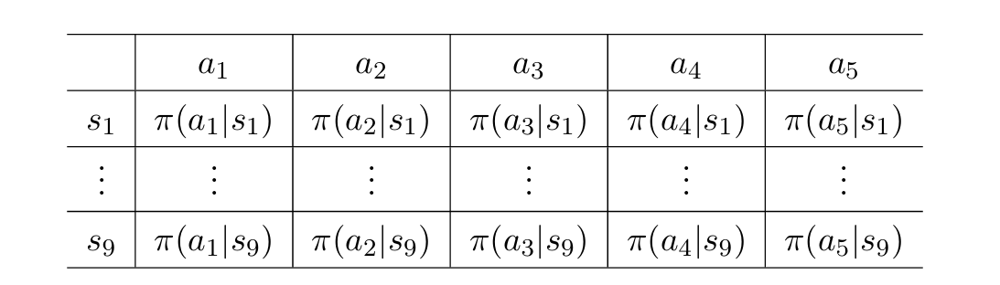
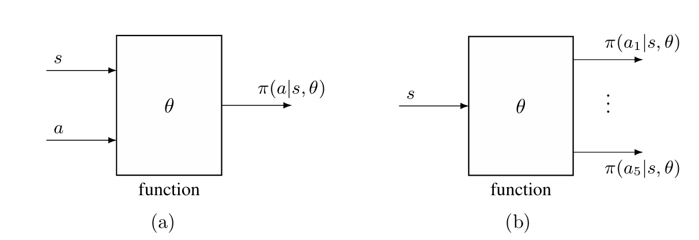
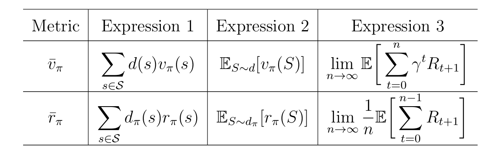
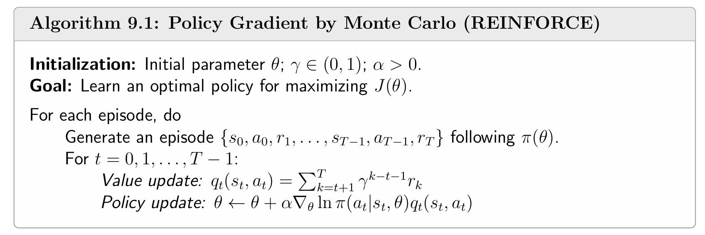

策略表示：从表格到函数
值函数近似的思想不只可以用于表示 state/action values，还可以应用于策略表示。在本章之前，策略都是通过表格的形式呈现：

在本章中，策略可以被参数化的函数表示为 π(a∣s,θ)，其中 θ∈Rm 是参数向量。函数也可以写为 πθ(a∣s)，πθ(a,s) 或 π(a,s,θ)。当策略通过函数表示时，最优策略可以直接通过优化某些特定的 scalar metrics 来获取，这样的方法称为 policy gradient（策略梯度）。例如，设 J(θ) 是一个 scalar metric，最优策略可以通过梯度上升优化目标函数得到：
θt+1=θt+α∇θJ(θt),
至此，强化学习的方法从 value-based 转为了 policy-based。
函数的结构既可以是输入状态 s 和动作 a，然后输出该状态-动作概率 π(a∣s,θ)，如下图 (a) 所示；也可以是输入状态 s，输出所有动作的概率，如下图 (b) 所示。

下面讨论 policy-gradient 使用什么样的 scalar metrics，如何计算这些 metrics 的梯度，以及如何利用样本来近似这些梯度。
注意：策略函数一旦参数化，最优性就不再是“每个状态都最大化”，而是“整体指标最大化”。这也是这一章的关键词变化。
用于定义最优策略的指标
如果策略是函数，就需要把“好策略”压缩成一个标量来优化。通常有两种指标：平均状态价值 vˉπ（基于 state values）和平均奖励 rˉπ（基于即时奖励）。
指标 1：平均状态价值
定义
vˉπ=s∈S∑d(s)vπ(s)=ES∼d[vπ(S)]
其中 d(s)≥0 且 ∑sd(s)=1，所以 d 可以看作状态分布。
向量形式为
vˉπ=dTvπ
其中 vπ=[…,vπ(s),…]T∈R∣S∣，d=[…,d(s),…]T∈R∣S∣。
分布 d 的选择
关于分布 d 的选择，通常有两种：分布 d 与策略 π 无关和有关。
分布 d 与策略 π 无关
这是最简单的情形。在这种情况下，记 d 为 d0，vˉπ 为 vˉπ0，表示分布和策略 π 无关（即相互独立）。
关于分布 d0 的具体情况，常见做法是采用均匀分布：
d0(s)=∣S∣1
或者只关心某个起始状态 s0（例如 agent 总是从 s0 出发）：
d0(s0)=1,d0(s=s0)=0.
分布 d 与策略 π 有关
在这种情况下，通常记 d 为 dπ，表示策略 π 下的平稳分布，它满足
dπTPπ=dπT.
其中 Pπ 表示状态转移概率矩阵。使用 dπ 作为 state values 的权值很直观：长期运行后，哪些状态经常出现，哪些状态就更重要。
等价写法
如果智能体按策略 π(θ) 采样得到的奖励为 {Rt+1}t=0∞，则常见的目标函数可以写成
J(θ)=n→∞limE[t=0∑n−1γtRt+1]=E[t=0∑∞γtRt+1]
它实际上就是 vˉπ。
证明等价：
E[t=0∑∞γtRt+1]=s∈S∑d(s)E[t=0∑∞γtRt+1∣S0=s]=s∈S∑d(s)vπ(s)=vˉπ.
上述公式的第一个等式是全期望公式，第二个等式是 state value 的定义。
指标 2：平均奖励
平均奖励定义为
rˉπ=s∈S∑dπ(s)rπ(s)=ES∼dπ[rπ(S)].
其中 dπ 表示平稳分布，并且 rπ(s) 表示状态 s 下的即时奖励期望：
rπ(s)=a∈A∑π(a∣s,θ)r(s,a)=EA∼π(⋅∣s,θ)[r(s,A)∣s],
其中
r(s,a)=E[R∣s,a]=r∑rp(r∣s,a).
rˉπ 的向量形式为
rˉπ=dπTrπ
其中 rπ=[…,rπ(s),…]T∈R∣S∣，dπ=[…,dπ(s),…]T∈R∣S∣。
等价写法
如果智能体按策略 π(θ) 采样得到的奖励为 {Rt+1}t=0∞，则常见的目标函数可以写成
J(θ)=n→∞limn1E[t=0∑n−1Rt+1].
它实际上就是 rˉπ。
证明等价：
-
首先证明对于任意初始状态 s0∈S，都有
rˉπ=n→∞limn1E[t=0∑n−1Rt+1∣S0=s0]
注意到
n→∞limn1E[t=0∑n−1Rt+1∣S0=s0]=n→∞limn1t=0∑n−1E[Rt+1∣S0=s0]=t→∞limE[Rt+1∣S0=s0],
最后一个等式是由于 Cesaro mean（切萨罗均值，也叫切萨罗求和），即若 {ak}k=1∞ 是一个收敛序列，它的极限 limk→∞ak 存在，则 {1/n∑k=1nak}n=1∞ 也是一个收敛序列，且极限为 limn→∞1/n∑k=1nak=limk→∞ak。
根据全期望公式，有
E[Rt+1∣S0=s0]=s∈S∑E[Rt+1∣St=s,S0=s0]p(t)(s∣s0)=s∈S∑E[Rt+1∣St=s]p(t)(s∣s0)=s∈S∑rπ(s)p(t)(s∣s0),
其中 p(t)(s∣s0) 表示从状态 s0 经过 t 步到达状态 s 的概率。根据平稳分布的定义，有
t→∞limp(t)(s∣s0)=dπ(s)
因此有
t→∞limE[Rt+1∣S0=s0]=t→∞lim∑rπ(s)p(t)(s∣s0)=∑rπ(s)dπ(s)=rˉπ
从而得证。
-
根据全期望公式，有
n→∞limn1E[t=0∑n−1Rt+1]=n→∞limn1s∈S∑d(s)E[t=0∑n−1Rt+1∣S0=s]=s∈S∑d(s)n→∞limn1E[t=0∑n−1Rt+1∣S0=s]
将第 1 步证明的结论带入，得到
n→∞limn1E[t=0∑n−1Rt+1]=s∈S∑d(s)rˉπ=rˉπ.
综上，命题得证。
两个指标间的关系

上表是关于两个指标的总结。由于两个指标为 state values 或即时奖励的加权均值，而不同的策略 πθ 产生不同的 state values 和即时奖励，因此可以通过优化指标的值来获得最优的策略（最优的参数 θ）。
此外，在折扣情形 γ∈(0,1) 下，这两个指标存在关系
rˉπ=(1−γ)vˉπ.
所以这两个目标是等价的，可以同时最大化。
等式证明：
根据 vˉπ 和 rˉπ 的向量形式 vˉπ=dπTvπ 和 rˉπ=dπTrπ，以及贝尔曼公式 vπ=rπ+γPπvπ，将贝尔曼公式两边同时乘 dπ 得到
vˉπ=rˉπ+γdπTPπvπ=rˉπ+γdπTvπ=rˉπ+γvˉπ
从而等式 rˉπ=(1−γ)vˉπ 成立。
指标的梯度
为了利用上一部分的两个指标去寻找最优策略，需要获取这些指标的梯度。
定理 1：Policy Gradient Theorem
设 J(θ) 是上一节中的某个标量指标，则有
∇θJ(θ)=s∈S∑η(s)a∈A∑∇θπ(a∣s,θ)qπ(s,a),
其中 η 表示状态分布，不同场景下会不同。上述公式可以写成期望形式：
∇θJ(θ)=ES∼η, A∼π(⋅∣S,θ)[∇θlnπ(A∣S,θ)qπ(S,A)].
上述定理是把多个具体情形统一成了一个表达，具体情形包括采用不同的指标、折扣类型和非折扣类型。在具体的情形中上述公式的 η(s) 会被替换为具体的分布，并且等号也可能变为近似，后面会一一呈现。
重点关注期望形式的公式，因为它非常适合做 SGD，后面会介绍。
期望形式推导
下面展示如何根据 ∇θJ(θ) 的求和形式得到期望形式。
首先，根据期望的定义，有
∇θJ(θ)=s∈S∑η(s)a∈A∑∇θπ(a∣s,θ)qπ(s,a)=ES∼η[a∈A∑∇θπ(a∣S,θ)qπ(S,a)].
根据求导结果
∇θlnπ(a∣s,θ)=π(a∣s,θ)∇θπ(a∣s,θ),
得到
∇θπ(a∣s,θ)=π(a∣s,θ)∇θlnπ(a∣s,θ).
带入 ∇θJ(θ)，得到
∇θJ(θ)=E[a∈A∑π(a∣S,θ)∇θlnπ(a∣S,θ)qπ(S,a)]=ES∼η,A∼π(S,θ)[∇θlnπ(A∣S,θ)qπ(S,A)].
这样原本的求和形式就能写成期望形式，进而用样本来估计。
注意上述的推导过程中，要求策略 π(a∣s,θ) 都是正的，这样 lnπ 才有意义。实际中，常用 softmax 来保证这一点，常见的做法是：
π(a∣s,θ)=∑a′∈Aeh(s,a′,θ)eh(s,a,θ),
其中 h(s,a,θ) 表示动作偏好。如果用神经网络实现，通常把状态 s 输入网络，最后一层接 softmax，输出所有动作的概率。此外，这种策略天然是随机的，所以它自带探索性。
折扣情形
先定义折扣情形下的 state value 和 action value：
vπ(s)=E[Rt+1+γRt+2+γ2Rt+3+⋯∣St=s],
qπ(s,a)=E[Rt+1+γRt+2+γ2Rt+3+⋯∣St=s,At=a].
并且有
vπ(s)=a∑π(a∣s,θ)qπ(s,a).
引理 1：vπ(s) 的梯度
在折扣情形下，对任意状态 s 都有
∇θvπ(s)=s′∑πPr(s′∣s)a∑∇θπ(a∣s′,θ)qπ(s′,a),
其中
πPr(s′∣s)=k=0∑∞γk[Pπk]ss′=[(I−γPπ)−1]ss′
表示从 s 到 s′ 的折扣总转移概率。
这里的“折扣总转移概率”可以理解成：
走任意步数到达 s′ 的所有概率贡献，按 γk 做了折扣加权。
定理 2：vˉπ0 的梯度
若 d0 与策略无关，则
∇θvˉπ0=ES∼ξπ, A∼π(⋅∣S,θ)[∇θlnπ(A∣S,θ)qπ(S,A)],
其中
ξπ(s)=s0∑d0(s0)πPr(s∣s0).
定理 3：折扣情形下 rˉπ 和 vˉπ 的梯度
在折扣情形下，
∇θrˉπ=(1−γ)∇θvˉπ≈s∑dπ(s)a∑∇θπ(a∣s,θ)qπ(s,a),
也可以写成
∇θrˉπ≈ES∼dπ, A∼π(⋅∣S,θ)[∇θlnπ(A∣S,θ)qπ(S,A)].
当 γ→1 时，这个近似会更准。
无折扣情形
在无折扣情形 γ=1 下，直接累加奖励往往会发散，所以这里要重新定义 value。
差分定义
vπ(s)=E[(Rt+1−rˉπ)+(Rt+2−rˉπ)+(Rt+3−rˉπ)+⋯∣St=s],
qπ(s,a)=E[(Rt+1−rˉπ)+(Rt+2−rˉπ)+(Rt+3−rˉπ)+⋯∣St=s,At=a].
这类 vπ(s) 也常被称为 differential reward 或 bias。
Poisson 方程
无折扣情形下满足
vπ=rπ−rˉπ1n+Pπvπ,
其中 1n=[1,…,1]T。
这个方程和 Bellman 方程很像，所以也叫 Poisson equation。
定理 4：Poisson 方程的解
令
vπ⋆=(In−Pπ+1ndπT)−1rπ,
则 vπ⋆ 是 Poisson 方程的一个解。并且任意解都可以写成
vπ=vπ⋆+c1n,c∈R.
也就是说，解不唯一，只差一个常数。
直观理解：
Poisson 方程里 I−Pπ 本身是奇异的，因为常数向量 1n 会落在它的零空间里。
加上 1ndπT 以后，矩阵才可逆。
定理 5：无折扣情形下平均奖励的梯度
在无折扣情形下，
∇θrˉπ=s∑dπ(s)a∑∇θπ(a∣s,θ)qπ(s,a)=ES∼dπ, A∼π(⋅∣S,θ)[∇θlnπ(A∣S,θ)qπ(S,A)].
这是一个严格成立的结果，而且状态分布就是平稳分布 dπ。
Monte Carlo policy gradient（REINFORCE）
有了梯度表达式，下一步就是用它来做优化。
REINFORCE
由定理 1，对 J(θ) 使用梯度上升的公式为
θt+1=θt+α∇θJ(θt)≈θt+αES∼η,A∼π[∇θlnπ(A∣S,θt)qπ(S,A)].
由于真梯度通常不可得，就用随机梯度上升：
θt+1=θt+α∇θlnπ(at∣st,θt)qt(st,at).
其中 qt(st,at) 是对 qπ(st,at) 的估计。如果 qt(st,at) 用 Monte Carlo 回报估计，则这个算法就叫 REINFORCE 或者蒙特卡洛策略梯度，是最早也是最简单的一种 policy gradient 方法。
性质分析
因为
∇θlnπ(at∣st,θt)=π(at∣st,θt)∇θπ(at∣st,θt),
所以 REINFORCE 公式可以写成
θt+1=θt+αβt(π(at∣st,θt)qt(st,at))∇θπ(at∣st,θt)
令 βt=π(at∣st,θt)qt(st,at)，可以进一步得到
θt+1=θt+αβt∇θπ(at∣st,θt),
强化
若 βt>0，相当于在 (st,at) 处对 πθ 做梯度上升，从而 (st,at) 被选择的概率会增大；反之若 βt<0，相当于在 (st,at) 处对 πθ 做梯度下降，从而 (st,at) 被选择的概率会就越小。而 βt 的正负性与状态 st 下某个 action value qt(st,at) 相同，这种“表现好就增加概率，表现差就减少概率”的机制，正是算法名称 REINFORCE（强化）的由来。
探索与利用的权衡
当 qt(st,at)>0 时，βt 与 qt(st,at) 成正比，与 π(at∣st,θt) 成反比。因此，当 qt(st,at) 越大时，它增加的幅度就越大，倾向于 exploitation（利用）；而 π(at∣st,θt) 越小时，它增加的幅度也越大，说明这个动作原本不常被选中，更新后它可能被更多尝试，倾向于exploration（探索）。
伪代码

关于采样
理论上，梯度 ES∼η,A∼π[∇θlnπ(A∣S,θt)qπ(S,A)] 里的状态 S 应该服从相应的状态分布 η，动作 A 应该服从当前采样策略 π(⋅∣S,θ)。因此 REINFORCE 方法天然是 on-policy 的。